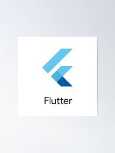

FLUTTER
Es un framework de código abierto y gratuito de Google que permite crear aplicaciones nativas para Android e iOS con una base de código sencilla. Se distingue por su nueva forma de crear aplicaciones nativas. Es un marco de interfaz de usuario de smartphone fiable para desarrollar aplicaciones atractivas rápidamente acelerando el desarrollo.
Caracteristicas
- Aplicaciones de alto rendimiento.
- Fácil de aprender.
- Económico.
- Comunidad y documentacion
- Mejora la productividad.
Ventajas
- Elementos gráficos que son capaces de respetar la estructura de diseño de los sistemas operativos.
- Su acceso a funciones nativas puede realizarse a través de la reutilización del código existente en lenguajes como Objective-C, Swift y Java.
- Ofrece widgets de interfaz de usuario desarrollados por el sistema de Google que cuentan con una alta calidad de codificación.
- Es rápido y constante renderizado.
- Beneficia a la productividad durante el tiempo en el que se desarrolla la aplicación.
Desventajas
- Las aplicaciones son pesadas.
- Las aplicaciones no son compatibles con aplicaciones web
- Es nuevo,por lo que tnedrás que escribir muchas cosas desde el inicio.
- Se tiene que aprender a usar Dart.